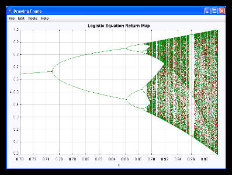

[The osp_guide.jar archive contains ready to run programs showing how to use the Open Source Physics code library.]
There is no substitute for a short demonstration program. This java archive (jar file) contains ready-to-run programs that show how to use the Open Source Physics Code library. The Open Source Physics: A Users Guide with Examples by W. Christian (Addison-Wesley 2007) provides a description of these programs and the entire Open Source Physics (OSP) project.
Select the Programs tab at the bottom of this window to run the programs.
License: The Open Source Physics code library and programs described in Open Source Physics: A Users Guide with Examples are being distributed by the Open Source Physics project under the GNU General Public License. A copy of this License is included on the OSP CD. If this CD is not available, write to the Free Software Foundation, Inc., 59 Temple Place, Suite 330, Boston MA 02111-1307 USA or view the license online at
http://www.gnu.org/copyleft/gpl.html.